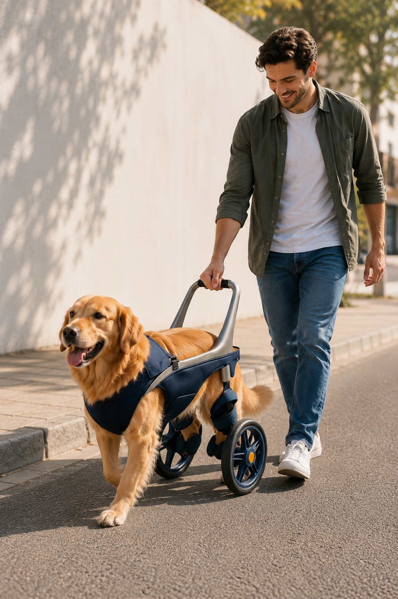
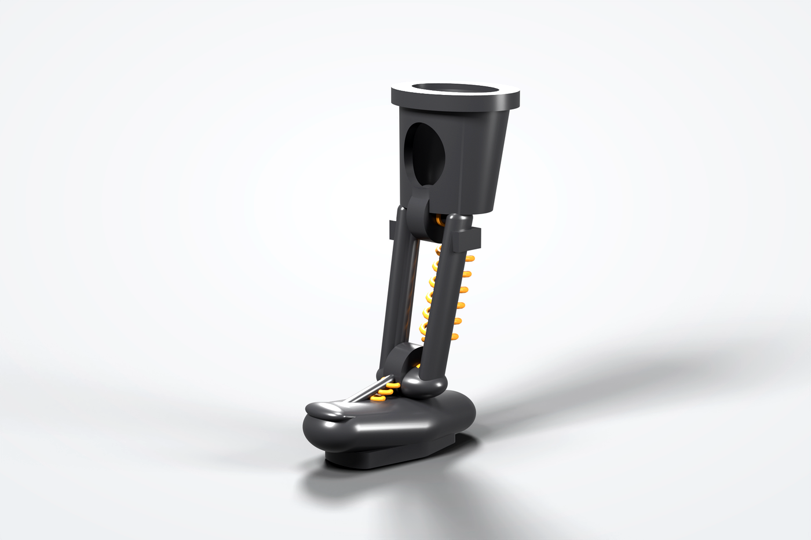
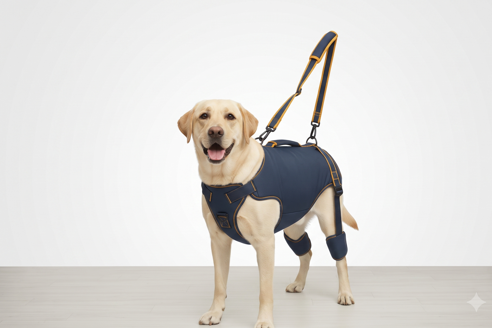
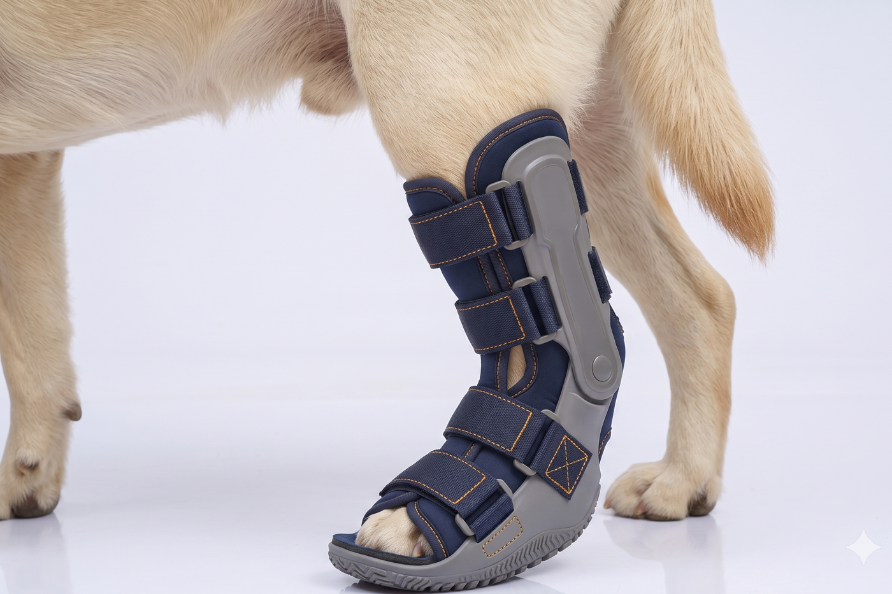
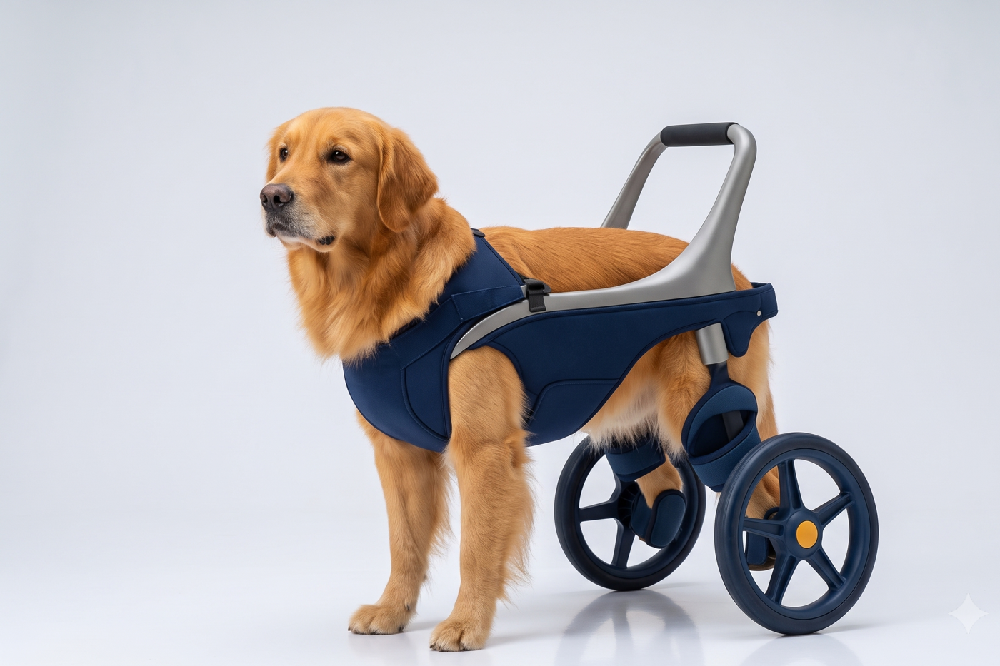
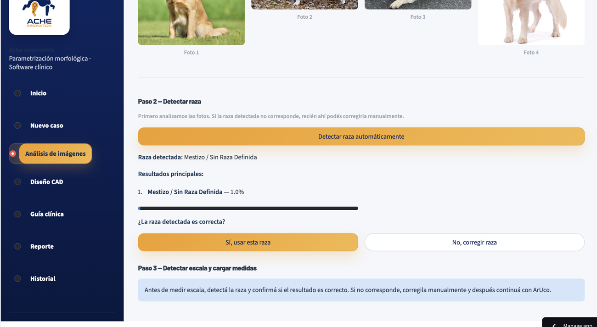

Necesito una solución para un perro
Conocé nuestras líneas de dispositivos, contanos el caso y recibí una orientación inicial sobre cómo avanzar.
Ver dispositivosDesarrollamos prótesis, órtesis, carros ortopédicos y arneses a partir de la anatomía, la condición clínica y las necesidades reales de cada caso.

Conocé nuestras líneas de dispositivos, contanos el caso y recibí una orientación inicial sobre cómo avanzar.
Ver dispositivosConocé Biomechanics Studio y las posibilidades para veterinarios, rehabilitadores, clínicas y fabricantes.
Ver la plataforma profesionalUna amputación, una lesión articular o una pérdida de movilidad no afectan de la misma manera a todos los animales. El tamaño, el peso, la anatomía, el estado clínico y la forma de moverse cambian las necesidades de cada caso. Por eso, un dispositivo genérico o una solución pensada únicamente por talle puede no ser suficiente.
En Ache buscamos reunir la información necesaria para desarrollar soluciones adaptadas al animal y coordinadas con profesionales y proveedores especializados.
Cada línea se encuentra en una etapa diferente. Algunas ya reciben casos piloto, otras están en preventa y otras continúan en desarrollo.

Diseñadas para reemplazar parte de una extremidad cuando el caso permite recuperar apoyo y mejorar el patrón de marcha.
Postular un caso de prótesisLa viabilidad depende de la anatomía, el estado clínico y la evaluación profesional.

Permite asistir la marcha, descargar parte del peso y acompañar al perro durante rehabilitación o pérdida de movilidad.
Sumarse a la preventaTe contactaremos antes de confirmar precio, disponibilidad o cualquier pago.

Brindan soporte a una articulación o extremidad para estabilizarla y acompañar la rehabilitación.
Consultar por una órtesisLa indicación y el tipo de soporte se definen junto con el profesional tratante.

Pensados para asistir la movilidad cuando una o más extremidades no pueden sostener o impulsar correctamente al animal.
Contarnos qué necesita mi perroActualmente esta línea todavía no se encuentra disponible para compra.
No hace falta conocer la diferencia entre una prótesis, una órtesis, un carro o un arnés antes de consultar.
A partir de esa información revisaremos qué línea podría corresponder o qué evaluación profesional hace falta.
Contarnos el casoNo todos los casos avanzan de la misma manera. Primero reunimos la información necesaria, después evaluamos la viabilidad y recién entonces definimos el próximo paso.
Seleccionás el tipo de dispositivo y completás algunos datos básicos sobre el animal, su condición y tu ubicación.
El equipo de Ache analiza el caso y, cuando hace falta, solicita fotos, medidas o documentación adicional.
Podemos coordinar una evaluación, preparar una propuesta, sumar el caso a un piloto o trabajar junto con un proveedor especializado.
Antes de cualquier pago, te explicamos el alcance, los próximos pasos, la disponibilidad y las condiciones necesarias para avanzar.
El envío del caso no implica una compra. Después de revisar la información te indicaremos si podemos avanzar, si necesitamos más datos o si corresponde otra alternativa.
Tres pasos breves. Podés volver atrás en cualquier momento sin perder lo que ya completaste.
La información inicial nos permite entender la necesidad y confirmar si podemos intervenir.
El caso es compatible con alguna de las líneas actuales y coordinamos el próximo paso.
Solicitamos fotos, medidas, estudios o la participación del profesional tratante antes de preparar una propuesta.
Te lo informamos con claridad y, cuando sea posible, buscamos una alternativa o derivación adecuada.

De fotos y medidas a una propuesta técnica revisable.
Biomechanics Studio organiza datos clínicos, imágenes y medidas para ayudar a documentar el caso, preparar el diseño del dispositivo y generar información que pueda revisarse antes de fabricar. La plataforma está en beta y se está validando con profesionales y casos reales.
Biomechanics Studio es una herramienta de apoyo. No reemplaza la evaluación clínica ni las decisiones del veterinario responsable.
Buscamos veterinarios, rehabilitadores y fabricantes de Argentina y Latinoamérica para demos guiadas, pilotos y alianzas.
Solicitar una demo o participar del pilotoPara documentar casos, reunir la información necesaria y revisar propuestas antes de avanzar.
Participar como veterinario pilotoPara aportar información funcional, acompañar el seguimiento y registrar cambios durante el proceso de rehabilitación.
Sumarse como rehabilitadorPara recibir casos mejor documentados, revisar especificaciones y reducir intercambios innecesarios antes de fabricar.
Evaluar una colaboraciónFormulario independiente para veterinarios, rehabilitadores y fabricantes.
Ache Innovation es una startup argentina que combina diseño de producto, conocimiento veterinario y tecnología para desarrollar soluciones de movilidad y rehabilitación animal.
No comenzamos por un talle o un producto estándar. Primero buscamos entender la anatomía, la condición y la necesidad funcional.
Biomechanics Studio organiza la información del caso y acompaña el proceso de diseño de los dispositivos.
Trabajamos con tutores, veterinarios, rehabilitadores y proveedores especializados para probar cada solución antes de escalarla.
Lidera la estrategia, el desarrollo de negocio, las alianzas y la validación comercial de las distintas líneas de Ache.
Ingeniero químico. Lidera el desarrollo operativo y productivo, el trabajo sobre materiales y procesos, la relación con proveedores y fabricantes, y la viabilidad necesaria para llevar las soluciones a producción.
Veterinaria responsable de aportar criterio clínico al análisis de casos y al desarrollo de soluciones que requieren acompañamiento profesional.
El equipo de Ache también integra perfiles de diseño industrial, ingeniería, comunicación y desarrollo tecnológico.
Una red de más de 120 veterinarios y profesionales forma parte del ecosistema construido alrededor de Ache.
Contame brevemente el caso. Yo mismo voy a revisar la consulta inicial y ayudarte a entender cuál puede ser el próximo paso.
Matías Smith — Cofundador y CEO de Ache
No. El arnés de rehabilitación está en preventa, las prótesis y órtesis reciben casos piloto y la línea de carros ortopédicos continúa en desarrollo. En cada sección indicamos el estado actual.
No hace falta saberlo antes de consultar. Podés contarnos qué está pasando y revisaremos qué línea podría corresponder o qué información profesional hace falta.
Depende del tipo de caso y de la instancia necesaria. Antes de avanzar, te informaremos con claridad si alguna evaluación, medición o intervención requiere un costo.
El valor depende del tipo de solución, las medidas, la complejidad del caso y el proceso de fabricación. Después de la revisión inicial podemos indicar si es posible avanzar y preparar una estimación.
Recibimos consultas de toda la Argentina. La forma de evaluación, toma de medidas y entrega depende del dispositivo, la ubicación y las condiciones de cada caso.
Depende del producto y del estado del animal. En prótesis, órtesis y situaciones clínicas complejas puede ser necesario contar con la evaluación o participación del profesional tratante.
Ache desarrolla y coordina cada solución y trabaja con proveedores especializados según el tipo de producto y las necesidades del caso.
Es la plataforma profesional de Ache para organizar datos clínicos, fotos y medidas, generar parámetros de diseño y producir documentación técnica revisable.
No. Biomechanics Studio funciona como una herramienta de apoyo. La evaluación clínica y las decisiones sobre tratamiento corresponden al profesional responsable.
La plataforma está en beta. El acceso se realiza mediante demos guiadas y programas piloto para veterinarios, rehabilitadores y fabricantes de Argentina y Latinoamérica.
Ache utiliza la información para responder la consulta y evaluar el caso. Solo podrá compartirla con profesionales o proveedores cuando sea necesario y exista la autorización correspondiente.
Contanos qué necesita el animal o conocé cómo participar en la validación profesional de Biomechanics Studio.
Para registrar interés y recibir información cuando se definan precio, compatibilidad y entrega.
Sumarme a la preventaPara demos, pilotos, derivación de casos o alianzas de fabricación.
Participar como profesional